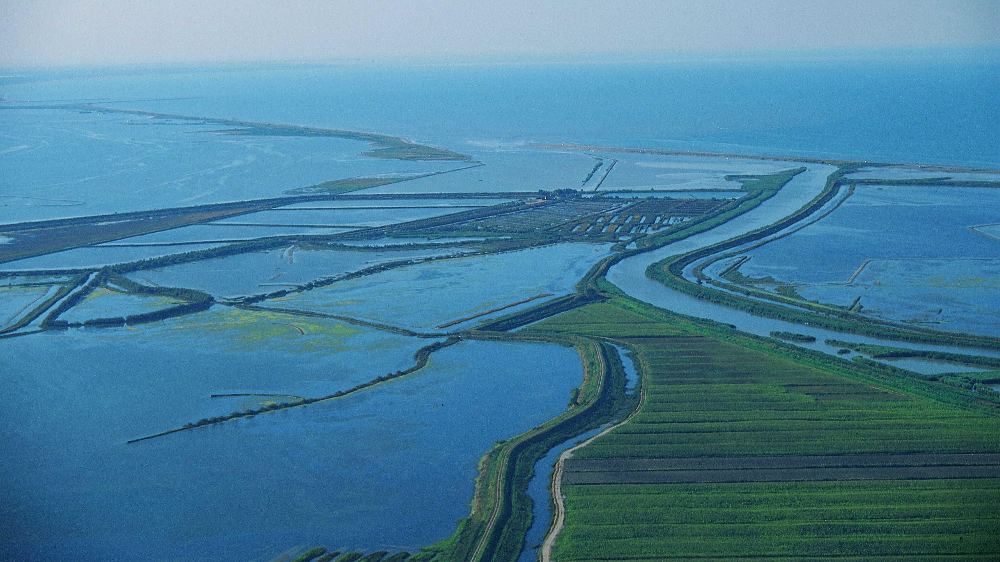
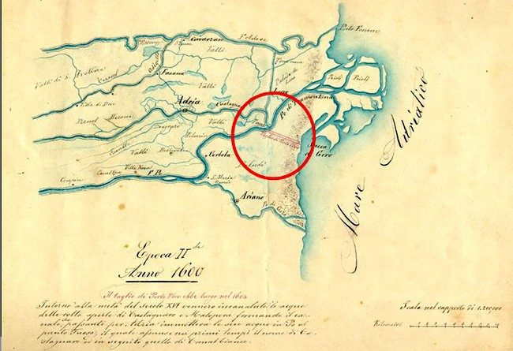
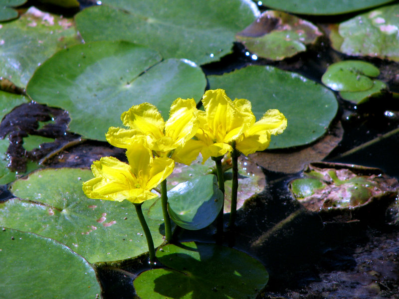
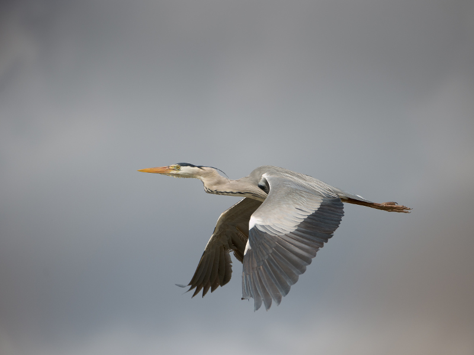

DELTA DEL PO
Il fiume Po, il più lungo d’Italia, attraversa tutta la pianura padana fino al Mar Adriatico, dove sfocia formando l’omonimo Delta del Po. Questa zona, formatasi a causa di un processo di sedimentazione dei depositi trasportati dal Fiume Po nei secoli, si estende per 18.000 ettari e copre 16 comuni tra Emilia Romagna e Veneto. Essendo un territorio paludoso, nel 1564 gli Estensi fecero bonificare parte del Delta e scavare 5 nuovi fiumi. Nei primi del 1600, venne deviato il corso del fiume verso sud all’altezza del ”Taglio di Porto Viro” per evitare che potesse sommergere la laguna di Venezia ed assunse l’aspetto odierno.


Nel territorio sono stati istituiti due parchi regionali: il Parco Regionale Veneto, e il Parco Regionale dell’Emilia-Romagna. Nel 1999 il Delta del Po è entrato nella lista dei patrimoni dell'umanità dell'UNESCO e poi, nel 2015 è stato anche riconosciuto come Riserva della Biosfera. Qui si distinguono vari ambienti: la campagna, le dune fossili, gli argini, le valli da pesca e le lagune. La sua biodiversità è straordinaria: conta 1000 specie di piante identificate e oltre 370 di uccelli.


Allo scopo di far conoscere e valorizzare pesci e molluschi tipici della pesca Delta del Po è nato il progetto Pesca Amica Miglio Zero, ovvero una pesca sostenibile, riconosciuta dal Ministero delle Politiche Agricole e Forestali. Anche molluschi come la vongola verace del Polesine e la Cozza di Scardovari vengono allevati nelle lagune e nelle sacche d’acqua.
Nel gennaio 2021 la Riserva della Biosfera e i 2 parchi regionali del Delta del Po hanno ottenuto la Carta Europea del Turismo Sostenibile assegnata da EUROPARC Federation.
LE TOURISME DURABLE
La Charte Européenne du Tourisme Durable (CETD) est un outil de gestion et un accord volontaire promu par l’organisation européenne non gouvernementale Fédération EUROPARC, qui vise à encourager le développement durable du tourisme dans les espaces protégés. Actuellement il y a 119 zones adhérant à cette initiative. Le trois principales objectifs de ce projet sont:
- SENSIBILISER: augmenter l’intérêt pour le patrimoine naturel et culturel, surtout parmi les jeunes.
- COOPÉRER: créer un réseau de personnes impliquées dans le secteur touristique local.
- DÉVELOPPER: améliorer le tourisme vers la durabilité en respectant l’environnement et en réduisant l’afflux de touristes.
La CETD se compose de trois volets, chacun destiné à un public spécifique :
- Volet 1: les signataires doivent trouver une stratégie afin de rendre durable le tourisme local.
- Volet 2: les prestataires touristiques s’engagent à adopter des méthodes de gestion respectueuses de l’environnement et de favoriser.
- Volet 3: les voyagistes et tour-opérateurs donnent un exemple de pratiques vertueuses.
Les avantages dont les membres de cet outil bénéficient sont les suivants:
- un rapport plus proche entre les structures du territoire et les industries touristiques
- plus grande reconnaissance et crédibilité de l’espace protégé
- l'opportunité d'échanger expériences et compétences entre les pays européens
- découverte de nouveaux méthodes à adopter grâce à une évaluation des ressources du territoire